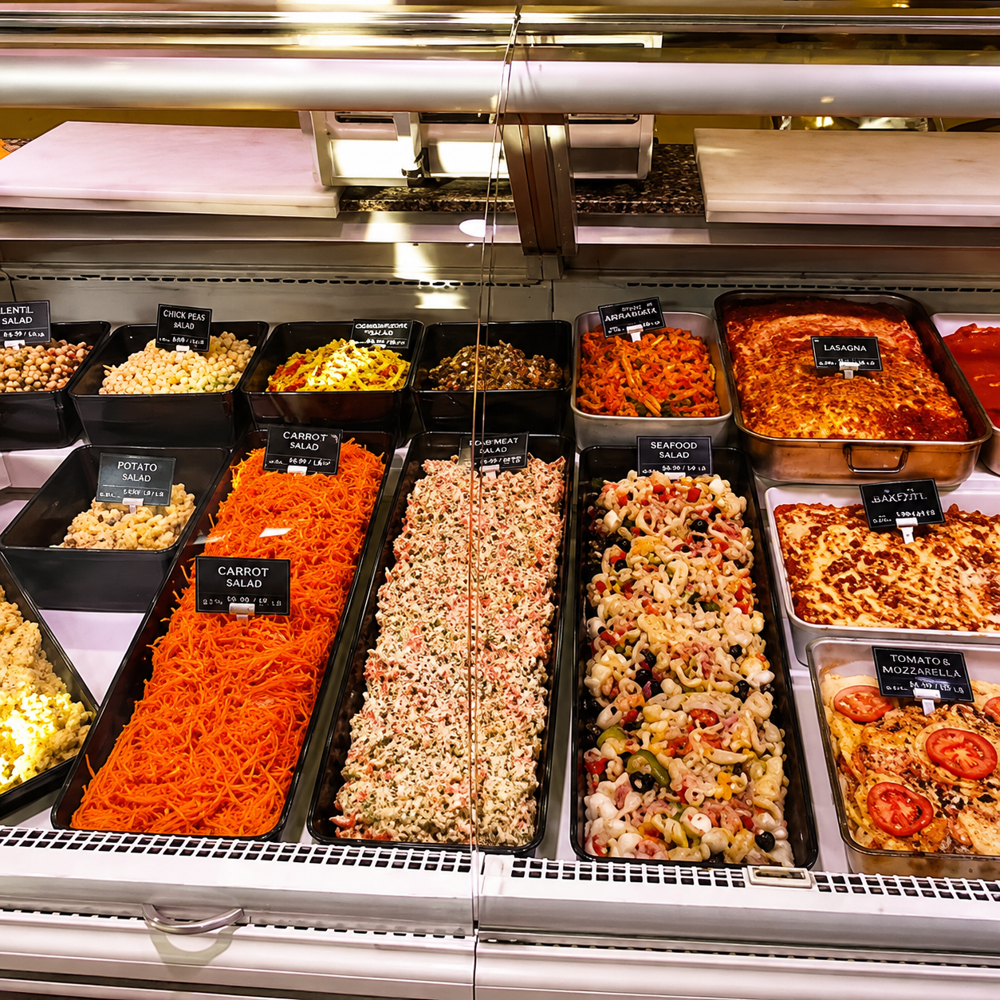
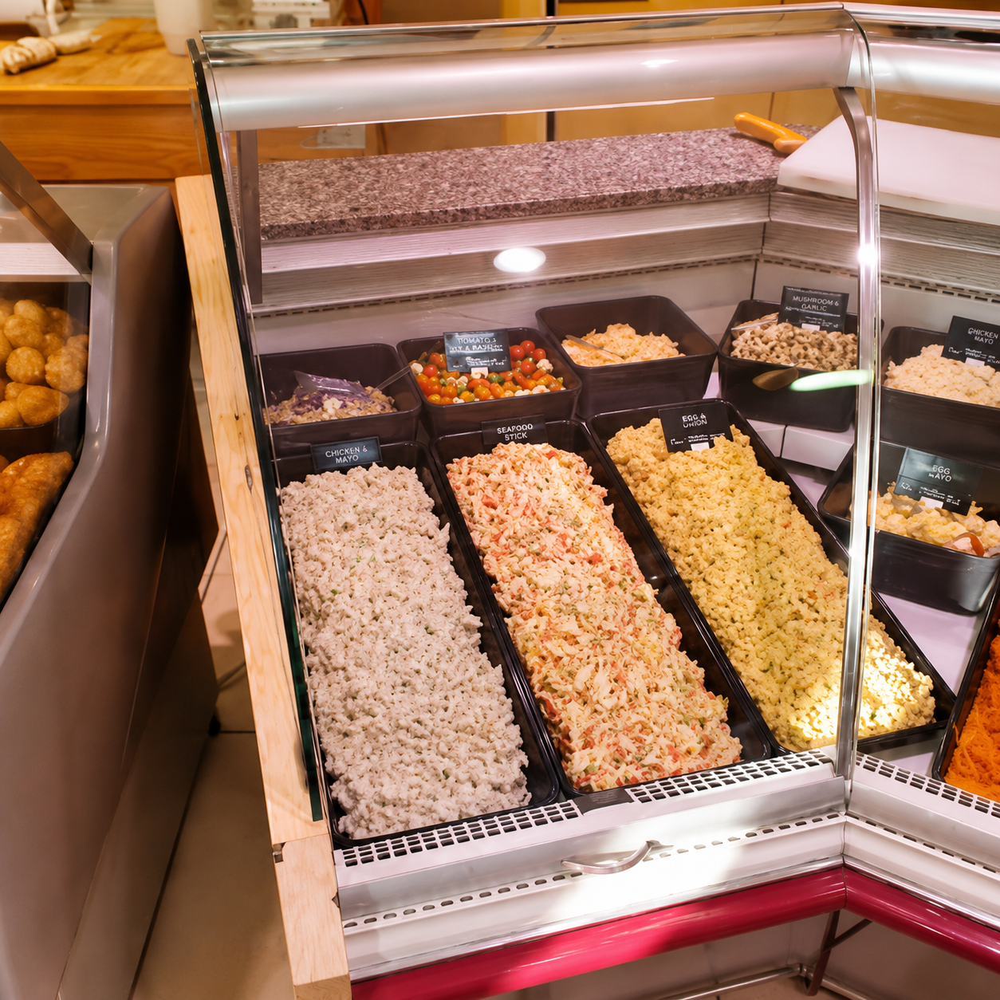
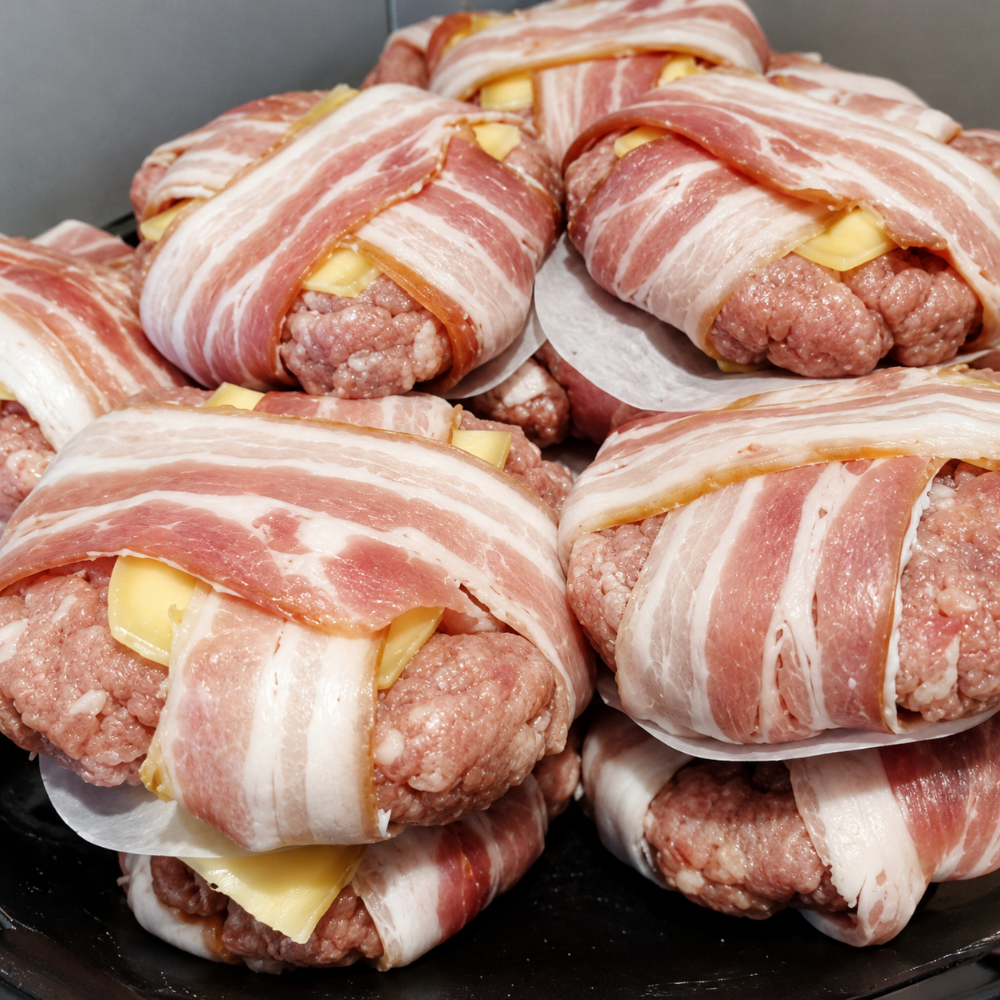
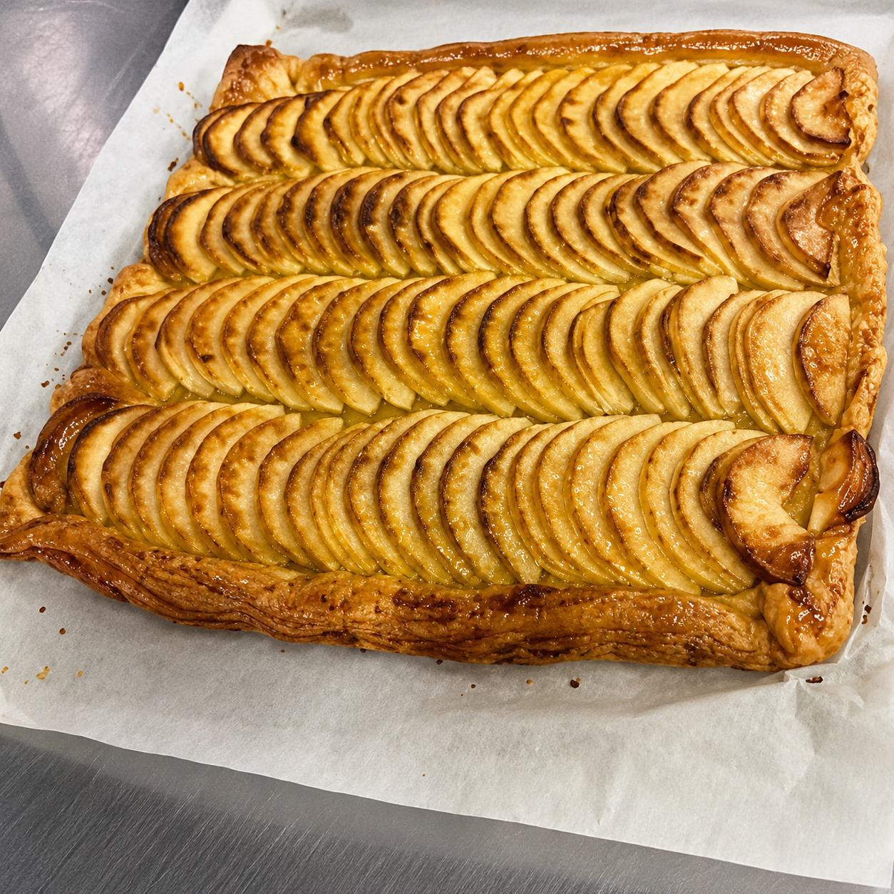

Cuisine maison
Le traiteur
Des plats préparés avec soin pour simplifier le quotidien, recevoir vos proches ou accompagner vos événements.

Tous les jours
Plats cuisinés maison
Des recettes généreuses et variées, proposées selon les saisons et les inspirations de l’équipe.

Pour recevoir
Buffets et grandes tablées
Apéritifs, repas de famille, anniversaires ou réceptions : échangeons sur le format, les quantités et les préparations adaptées.
Préparer mon événement
Sur commande
Une offre adaptée à vos besoins
Les propositions et disponibilités évoluent. Contactez la boutique choisie pour connaître les menus et réserver.
Contacter une boutiqueNos inspirations



